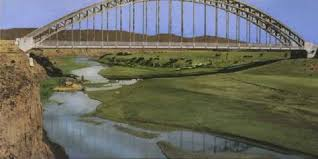
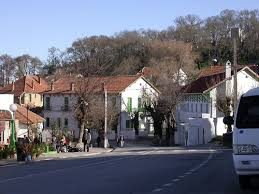
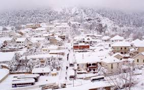
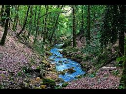
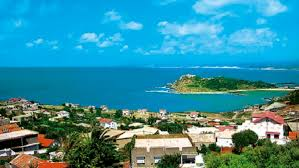

Jendouba nommée Souk El Arba jusqu'au 30 avril 19664, est une ville du Nord-Ouest de la Tunisie située à 154 kilomètres de Tunis et à cinquante kilomètres de la frontière algéro-tunisienne.
Elle se trouve dans la vallée de la Medjerda au centre d'une plaine fertile.
Chef-lieu du gouvernorat qui porte son nom, elle constitue une municipalité de 45 431 habitants en 20142 à la tête d'une agglomération de 113 116 habitants, ce qui fait d'elle la plus importante aire urbaine du Nord-Ouest tunisien.

Aïn Draham est une petite ville3 du Nord-Ouest de la Tunisie (gouvernorat de Jendouba) située à une vingtaine de kilomètres au sud de Tabarka. Ancien souk, camp militaire, et centre d'estivage et de services, elle se présente comme un modeste centre de développement local.


Beni M'Tir ou Beni Metir est un village du Nord-Ouest de la Tunisie situé dans la région montagneuse de Kroumirie à quelques kilomètres d'Aïn Draham.
La ville se trouve sur le territoire de la confédération de tribus berbères des Kroumirs.

Tabarka est une ville côtière du Nord-Ouest de la Tunisie située à une centaine de kilomètres de Tunis et à quelques kilomètres de la frontière algéro-tunisienne. Son nom est étymologiquement d'origine berbère et signifierait « pays des bruyères ».
